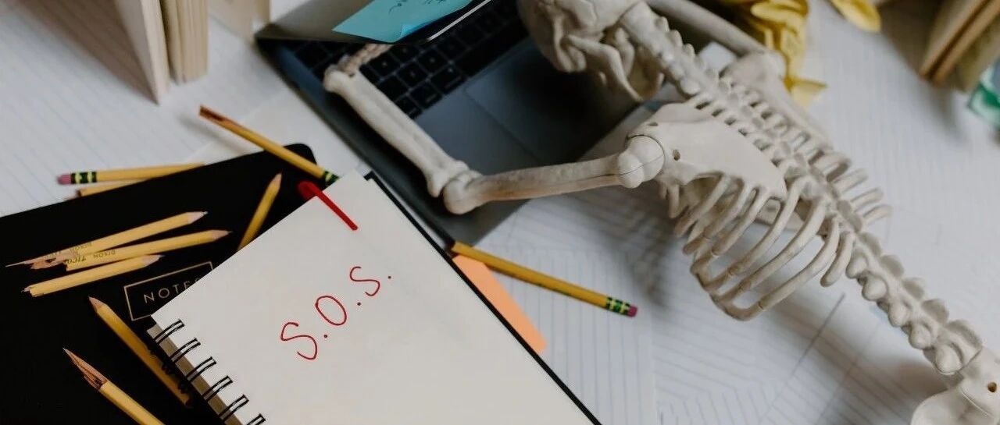

碧桂园还有救吗？
这个问题，是很多人关注的，利益相关的人肯定希望它有救。很多时候，就怕理想是美好的，现实是骨感的。
我们不直接下结论，就聊一聊碧桂园的“命门”。为了让大家都能听懂，我尽量用大白话。
碧桂园武器库里，有一样武器叫“高周转”。所谓“高周转”，你可以印象流点，即拿地后以最快的速度开始施工，最快的速度卖完项目，每个环节都追求速度的极致，因为在最短的时间内回款的资金，可以继续投到下一个项目去。
碧桂园的土储，约60%左右集中在三四线及以下城市，其余的说是在一二线城市的，但其实大部分分布在一二线城市的近郊、远郊。这些都是现在市场遇冷房子卖不动的重灾区。
所以我们可以看到，碧桂园今年1-7月的销售额，和2021年时相比，下降了61%，也就是说，“高周转”玩不动了，但高周转的伴生产物“高杠杆”、“高负债”依然存在，这俩会不断吞噬企业的利润。
对企业来说，最佳的救命方式，无非是恢复自身的造血功能，即自身的销售回款良好，能大部分覆盖支出，不需要过度依赖外部融资输血。
从这个层面来说，要救碧桂园，意味着要让三四线及以下城市、一二线城市近郊、远郊的楼市重新热起来、火爆起来。但借鉴过往，要让楼市火爆起来，最好的方式是一二线城市拉涨，蔓延到三四线拉涨，你觉得如今现实吗？
... ...
第二，要救碧桂园，需要外部融资“输血”通道畅通。
如今的境况是什么？是房企的海外融资基本断绝，只剩境内融资为主。但境内融资，从目前的情况来看，碧桂园虽然获得很多所谓的银行授信、新发债、股票增发等政策支持，但真实落地、到账的能有多少？
政策的快速、切实落地执行，能帮碧桂园缓一口气，但无法从本质上帮碧桂园完成企业自身造血功能的恢复。
而碧桂园如今实质上违约，开始准备境内债券重组，这意味着海外融资通道不畅后，境内融资通道也开始“坍塌”。原因很简单，金融机构不是慈善机构，出于风险管控的原因，会主动避开高风险的项目和企业，除非是任务。
融资这条通道，肉眼可见地收缩，只有老爷下令开仓放粮，才能解一时饥渴。但长久来说，还是自己田里要能长出庄稼（即企业自身造血功能恢复），而不是依赖开仓放粮这虚无缥缈的希望。
... ...
第三，碧桂园是全产业链模式。
杨国强在工程上追求成本的极致节俭，关于他的事迹碧桂园人可能耳朵已经听出老茧，或许他的观念中，利润是节俭出来的。
虽然都是高周转模式，但恒大的玩法明显是赌房价上涨，“钱是赚出来的”，所以恒大重土储，几乎来者不拒；碧桂园是全产业链，“钱是省出来的”，所以碧桂园什么都干，建设施工、建材、监理等等，都是自己下场做。
就像一只母鸡，自己孵化了好几窝小鸡，带着这些小鸡攻城略地去抢地盘，抢占市场份额，反正食物都是自家吃。
市场好的时候，碧桂园突飞猛进，销售额万亿在望，笑傲江湖。其全产业链的这些小鸡，跟着老母鸡，各个也都业绩飞起，赚得盆满钵满；
市场遇冷，老母鸡自己都快活不下去了，小鸡们不仅没有自力更生的能力，没有给老母鸡供食、输血的能力，还有可能因为自身需要适应环境，开始不断裁员、缩编等，反向去拖累老母鸡。
简单一句话，全产业链在市场好的时候，随着碧桂园的扩张而扩张，可以帮碧桂园“省”出更多的利润；但因为自身没有独自开拓市场的能力，在市场差时，又需要缩编，不仅不能给碧桂园供血，还会成为“累赘”。
... ...
至此，学习碧桂园高周转的房企，已经一一趴下，一个时代终于逝去。
有些人高喊着“救碧桂园”、“碧桂园肯定有救”，但你一问它怎么救，它啥也说不出来，只会喃喃自语，再反向给你扣个帽子，说你唱衰。
有时候，人和”狗“的差距，比人和狗的差距还要大。
最后，这其实是一个关于人类劣根性的故事。人们很容易犯下这样的错误:总以为自己足够强大，根本不会倒下。事实是并非如此。——《大而不倒》